| homeownership | Frequency |
|---|---|
| rent | 3858 |
| mortgage | 4789 |
| own | 1353 |
| Total | 10000 |
Analítica de los Negocios
Explorando datos categóricos
Carlos Cardona Andrade
Plan para hoy
Datos categóricos
Tipos de variables
Variables Categóricas

Visualizando una variable categórica
Tabla de Frecuencia
Una variable categórica se resume mediante una tabla que muestra la frecuencia o el porcentaje de casos en cada categoría
Suele representarse mediante un gráfico de barras o un gráfico de torta
Gráfico de barras
Un gráfico de barras es la forma más común de representar una única variable categórica.

Gráfico de barras
Un gráfico de barras en el que se muestran proporciones en lugar de frecuencias se llama gráfico de barras de frecuencia relativa.

Gráfico de barras en R

Gráfico de barras en R

Gráfico de barras
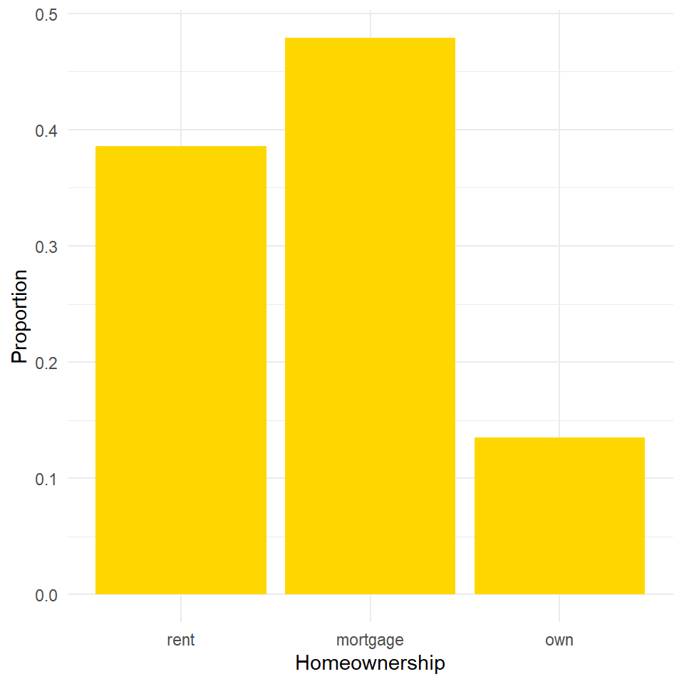
쮺칩mo sería el gráfico para una variable categórica ordinal?
💪 Ejercicio 1
Usando la plantilla con la que ya hemos trabajado anteriormente, establezcan el directorio de trabajo y carguen los paquetes
tidyverseyjanitor(Este último instálenlo por lo que es la primera vez que lo usamos).Importen los datos
credit_demographicscon el nombrecreditusando la funciónread.csv().Exploren los datos usando la función
glimpse().En ocasiones, algunos nombres de variables pueden ser inconsistentes o difíciles de manejar. El paquete
janitorfacilita este proceso. Ejecuten la siguiente línea de código y luego vuelvan a utilizar la funciónglimpse(). 쯅otan la diferencia en los nombres?
💪 Ejercicio 1
- Como pueden notar en el punto anterior, la variable
defaultcontiene 0s y 1s. Vamos a convertirla en una variable de texto (string) para que sea más fácil de interpretar en los gráficos. Ejecuten el siguiente código para crear una nueva variable:
- Usando esta nueva variable
default_stringy el paqueteggplot, construyan un gráfico de barras para visualizar cuántos clientes están en default y cuántos no. Asegúrense de incluir etiquetas y un título para hacer el gráfico más informativo.
Gráficos de torta
Las áreas de las porciones representan los porcentajes de las categorías
Generalmente es más difícil comparar los tamaños de los grupos en un gráfico de pastel que en un gráfico de barras
Gráficos de torta
Gráficos de torta
Es mucho más fácil hacer un gráfico de pastel incorrecto que un gráfico de barras incorrecto.
En un gráfico de pastel, las categorías deben representar un todo. No existe esta restricción para un gráfico de barras.
Gráficos de torta

Gráfico de torta en R
Existen diferentes maneras de hacer un gráfico de torta, más allá de
ggplotEn Pie Charts encuentran una guía explicando diferentes maneras de hacerlo en
Gráfico de Waffle
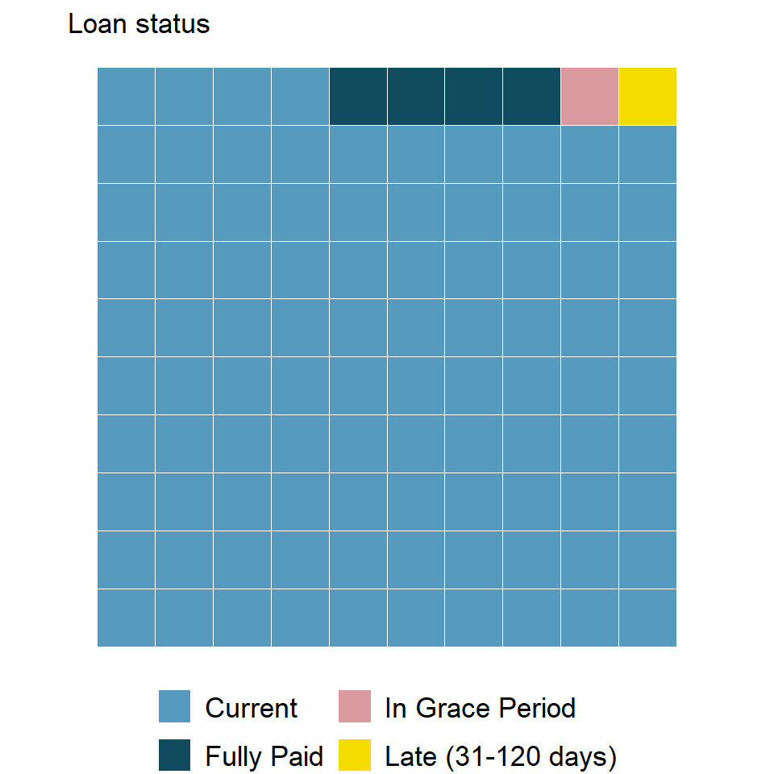
Gráfico de Waffle
Los gráficos de waffle son otra técnica útil para visualizar datos categóricos, mostrando la proporción de cada categoría
Al igual que los gráficos de pastel, funcionan mejor cuando el número de categorías es bajo
A diferencia de los gráficos de pastel, facilitan la comparación de proporciones que no representan fracciones simples
Gráfico de Waffle en R
Este tipo de gráfico va más allá de la funcionalidad de
ggplotPor lo tanto no lo explicaré en clase, pero acá les dejo recursos para que aprendan por su cuenta:
La página del paquete waffle
Waffle Charts provee una guía de cómo crear este tipo de gráfico
Visualizando dos variables categóricas
Tablas de Contingencia
Una tabla que resume datos para dos variables categóricas de esta manera se llama tabla de contingencia
Cada valor en la tabla representa la cantidad de veces que ocurrió una combinación particular de resultados de las variables
homeownership
|
||||
|---|---|---|---|---|
| application_type | rent | mortgage | own | Total |
| joint | 362 | 950 | 183 | 1495 |
| individual | 3496 | 3839 | 1170 | 8505 |
| Total | 3858 | 4789 | 1353 | 10000 |
Gráfico de barras apiladas
Los solicitantes de préstamos viven más comúnmente en viviendas con hipoteca
Sin embargo, basándose solo en este gráfico, es difícil determinar cómo varían los tipos de solicitud entre los niveles de tenencia de vivienda

Gráfico de barras estandarizado
Este tipo de visualización es útil para comprender la proporción del tipo de solicitudes en cada nivel de tenencia de vivienda
Además, dado que las proporciones del tipo de préstamos varían entre los grupos, podemos concluir que estas dos variables están asociadas en esta muestra

Gráfico de barras dobles
Dentro de cada nivel de tenencia de vivienda, las solicitudes individuales son más comunes que las solicitudes conjuntas
Las solicitudes conjuntas son más comunes entre los solicitantes con hipoteca, en comparación con los inquilinos y los propietarios.

Gráfico de barras apiladas en R
Gráfico de barras estandarizado en R

Gráfico de barras dobles en R
Explorando dos variables categóricas
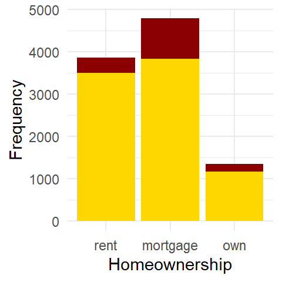
💪 Ejercicio 2
Con base en el código con el que crearon la variable
default_string, generen la variablemarriage_stringsegún los valores de la variablemarriage:1 \(\rightarrow\) married
2 \(\rightarrow\) single
3 \(\rightarrow\) other
Creen un gráfico de barras (apilados, dobles o estandarizado) para visualizar la relación entre el estado civil (
marriage_string) y si el cliente está en default (default_string).쯈ué pueden concluir a partir del gráfico anterior?
Gráfico de mosaico

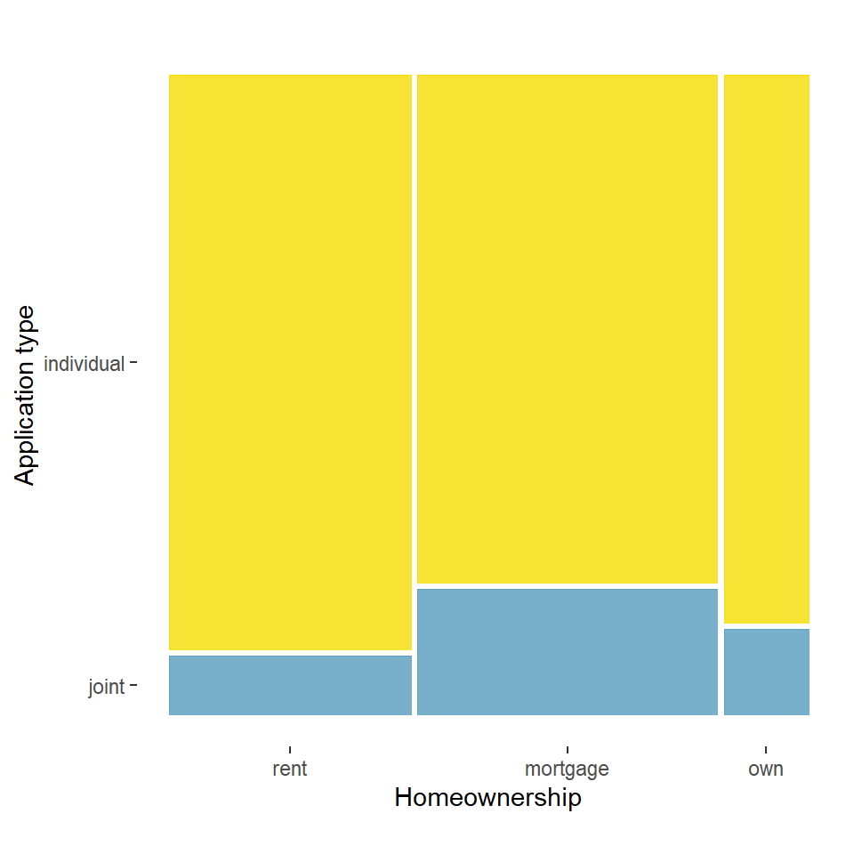
Gráfico de mosaico
Un gráfico mosaico es otra manera de visualizar tablas de contingencia que se asemeja a un gráfico de barras apiladas estandarizado
La ventaja consiste en aún poder ver el tamaño relativo de los grupos de la variable principal
\[ \small \begin{array}{rcl} \text{Area del segmento} &=& (\text{ancho de la barra}) \times (\text{longitud del segmento}) \\ &=& \text{frecuencia de la fila} \times (\text{proporcion de la fila}) \\ &=& \text{frecuencia de la fila} \times \dfrac{\text{frecuencia de la celda}}{\text{frecuencia de la fila}} \\ &=& \text{frecuencia de la celda} \end{array} \]
Gráfico de mosaico
Es importante pensar cuál variable va en el eje horizontal y cuál en el vertical. En ocasiones, una es más explicativa que la otra.
Gráfico de Mosaico en R
Este tipo de gráfico también va más allá de la funcionalidad de
ggplotLa página del paquete ggmosaic es un buen sitio para empezar a practicar por su cuenta
Comparando variables numéricas entre grupos
Histograma y Diagrama de Caja entre grupos

Ridge plot
Otro tipo de visualización útil para comparar datos numéricos entre grupos es el gráfico de crestas (ridge plot), que combina gráficos de densidad de varios grupos en la misma escala dentro de una única ventana de visualización
Ridge plot
Establecer el color según la variable numérica en lugar de la categórica puede ser bastante útil para contar la historia de los datos.
Ridge plot en R
Quiero destacar la flexibilidad de para mejorar con la incorporación de paquetes
La página del paquete ggridges es un buen sitio para profundizar en este tipo de gráfico
Basic ridgeline plot también explica este gráfico y tiene buenos ejemplos
Maneras de visualizar relaciones entre variables
numérica v.s. numérica
- Diagramas de dispersión
categórica v.s. categórica
- Tablas de contigencia
- Gráficos de barra (apilados, dobles, estandarizados)
- Gráfico de mosaico
categórica v.s. numérica
- Diagramas de caja entre grupos
- Ridge plots
Probabilidad
Probabilidad
- Una probabilidad se define como la siguiente proporción:
\[P=\dfrac{\#\, \text{resultados deseados}}{\#\, \text{resultados posibles}}\]
- Por ejemplo, al tirar un dado la probabilidad de obtener un 2 luego de lanzar un dado es:
\[P(2)=\dfrac{1}{6}=0.166=16.66\%\]
Probabilidad
- Las probabilidades siempre están entre 0 y 1.
- Una probabilidad igual a 0 indica que el evento nunca va a ocurrir.
- Por otro lado, si es igual a 1 indica que con toda seguridad el evento tendrá lugar.
- \(\sum{P}=1\)
- La probabilidad de que un evento no ocurra es igual a 1 menos la probabilidad de que el evento ocurra.
- Al tirar un dado:
\[P(\sim2)=1-P(2)=1-\dfrac{1}{6}=\dfrac{5}{6}\]
Probabilidad
- Si A y B son eventos alternativos (no se superponen), entonces \(P(A\) \(o\) \(B)=P(A)+P(B)\)
- Siguiendo con el ejemplo del dado:
\[P(2\, o\, 3)=P(2)+P(3)=\dfrac{1}{6}+\dfrac{1}{6}=\dfrac{2}{6}=\dfrac{1}{3}\]
Probabilidad
- Si A y B son eventos que se superponen (ocurrencia conjunta), entonces \(P(A\) \(o\) \(B)=P(A)+P(B)-P(A\) \(y\) \(B)\)
- 쮺uál sería la probabilidad de sacar un número par o un 6?
\[P(Par\, o\, 6)=P(Par)+P(6)=\dfrac{3}{6}+\dfrac{1}{6}=\dfrac{4}{6}=\dfrac{2}{3} \quad \text{Incorrecto} \]
\[P(Par\, o\, 6)=P(Par)+P(6)-P(Par\, y\, 6)=\dfrac{3}{6}+\dfrac{1}{6}-\dfrac{1}{6}=\dfrac{3}{6}=\dfrac{1}{2} \quad \text{Correcto} \]
Probabilidad
- Si A y B son independientes, entonces \(P(A\, y\, B)=P(A) \cdot P(B)\)
- 쮺uál es la probabilidad de sacar 2 luego de tirar el dado dos veces?
\[P(2\, luego\, 2)=P(2) \cdot P(2)=\dfrac{1}{6} \cdot \dfrac{1}{6}=\dfrac{1}{36}\]
La Distribución Normal
Escala de frecuencia de un Histograma
Retomemos la distribución de la expectativa de vida en los datos gapminder.
Para los histogramas en una escala de frecuencia, la altura de las barras = cantidad de observaciones en ese intervalo.
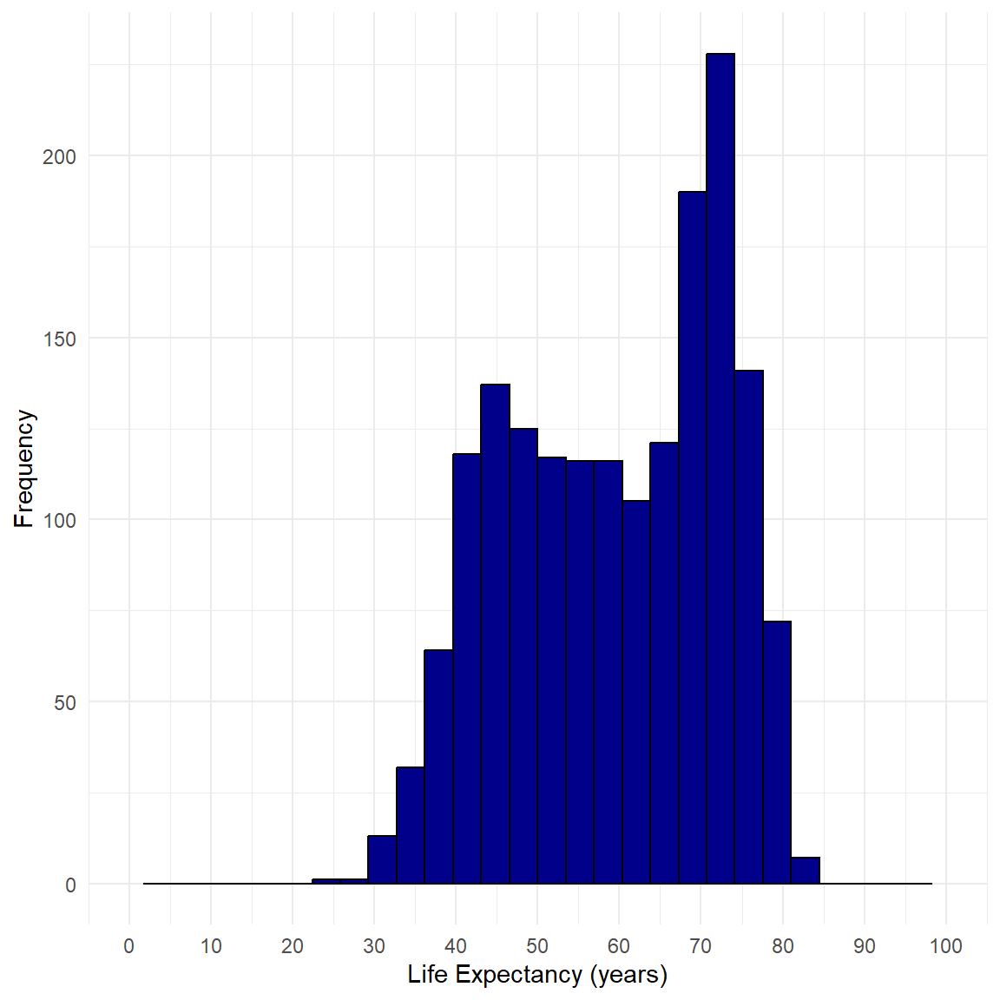
Escala de densidad de un Histograma
Para un histograma en una escala de densidad,
el área de la barra = proporción de observaciones en ese intervalo.
Escala de densidad de un Histograma
En una escala de densidad, la proporción de países con expectativas de vida entre 60 y 70 años = el área bajo la curva del histograma entre 60 y 70.
Esa proporción es básicamente la probabilidad de encontrar esos valores en nuestros datos.
Del Histograma a la Curva de Densidad
Podríamos intentar aproximar un histograma mediante una curva suave, llamada una función de densidad (probabilidad).
Una función de densidad nunca es negativa
El área total bajo la curva es siempre 1 o 100%
Del Histograma a la Curva de Densidad
Por lo tanto, la proporción de países con expectativas de vida entre 60 y 70 años se puede estimar como el área sombreada bajo la curva. La proporción exacta es el área bajo el histograma.
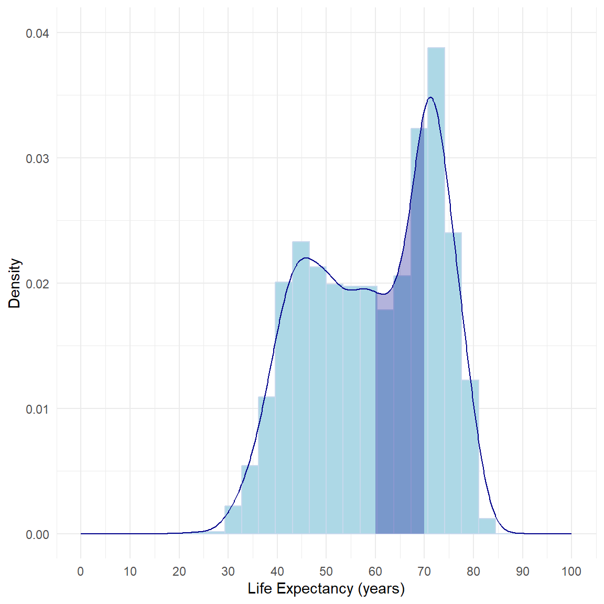
Variables continuas y Curvas de densidad
La distribución de probabilidad de una variable aleatoria continua se describe mediante una curva de densidad.
Si \(Y\) es una variable aleatoria continua, \(P(a < Y < b)\) es el área bajo la curva de densidad de \(Y\) sobre el intervalo entre \(a\) y \(b\).
Nota: todas las distribuciones de probabilidad continuas asignan una probabilidad de cero a cada resultado individual: \(P(Y=y)=0\)
Distribución Normal
La distribución normal (campana de Gauss) es una familia de curvas de densidad que son simétricas y con forma de campana. Se definen por su media \({\color{orange} \mu}\) y su desviación estándar \({\color{orange} \sigma}\), con notación \(N(\mu,\sigma)\).
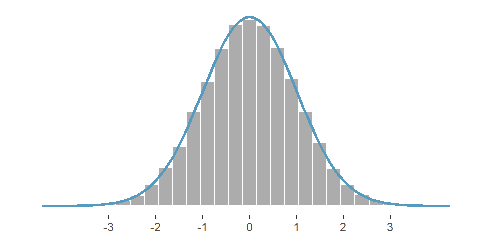
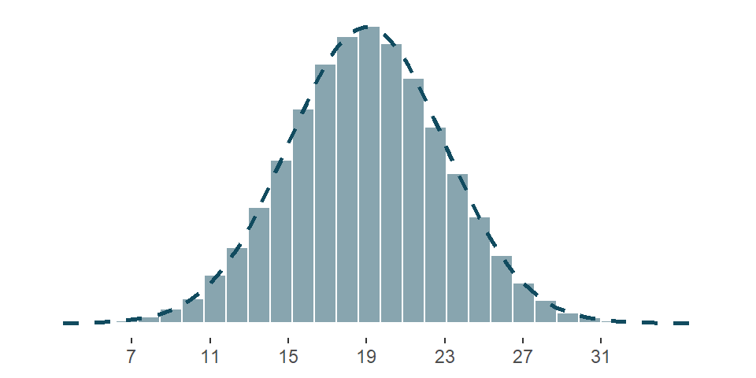
Las dos distribuciones entonces se escribirían \(N(1,0)\) y \(N(19,4)\).
\(N(1,0)\) es conocida como la dist. normal estandarizada
Distribución Normal
쯈ué dice?
La probabilidad de ver un valor particular de los datos es máxima cerca de la media y disminuye a medida que se alejan de la media
쯇or qué es importante?
La distribución normal define una familia fundamental de distribuciones de probabilidad en forma de campana, que modela eficazmente muchos fenómenos del mundo real
쮺uáles son sus implicaciones?
Condujo a conceptos como 랇a persona promedio, pruebas de significancia estadística (como ensayos médicos) y un uso generalizado de la curva normal, a veces con una dependencia excesiva de la suposición de normalidad
Ejemplo: SAT vs. ACT
- Las puntuaciones del SAT siguen una distribución aproximadamente normal con una media de 1500 puntos y una desviación estándar de 300 puntos.
\[SAT \sim N(1500,300)\]
- Las puntuaciones del ACT también siguen una distribución aproximadamente normal con una media de 21 puntos y una desviación estándar de 5 puntos.
\[ACT \sim N(21,5)\]
Ejemplo: SAT vs. ACT
Supongamos que una universidad está decidiendo cuál de los dos aspirantes obtuvo un mejor puntaje en su examen estandarizado en comparación con los otros estudiantes: Pam, quien obtuvo un 1800 en su SAT, o Jim, quien obtuvo un 24 en su ACT?
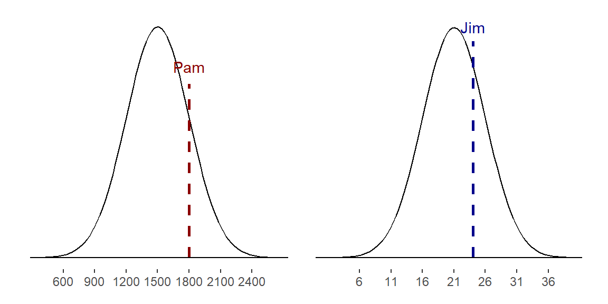Estandarizar con el Z-Score
Dado que no podemos simplemente comparar estos dos puntajes, en su lugar comparamos cuántas desviaciones estándar por encima de la media está cada observación.
El puntaje de Pam es \(\dfrac{1800-1500}{300}=1\) desviación estándar (SD) encima de la media
El puntaje de Jim es \(\dfrac{24-21}{5}=0.6\) SD encima de la media
Estandarizar con el Z-Score
La siguiente gráfica visualiza la comparación que estamos haciendo al usar desviaciones estándar:
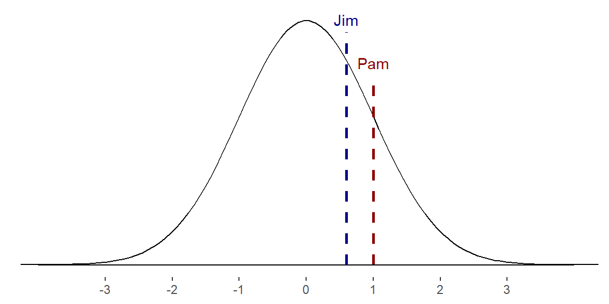El Z-score
El Z-score de una observación representa cuántas desviaciones estándar se encuentra por encima o por debajo de la media, permitiendo comparar su posición relativa dentro de una distribución.
Si \(x\) es una observación de la distribución \(N(\mu,\sigma)\), el Z-score se define:
\[Z=\dfrac{x-\mu}{\sigma}\]
Observaciones que estén más allá de \(3\) SD de la media (\(|Z|>3\)) son usualmente consideradas inusuales.
Maneras de detectar valores atípicos (Outliers)
\(1.5 \times RIC\)
Observaciones con \(|Z|>3\)
Histogramas
Diagramas de caja
쮻e dónde vienen los valores atípicos?
- Errores de medición o registro de los datos
- Suelen ser valores extraños o imposibles
- Problemas de muestreo y condiciones inusuales
- No son parte de la población que nos interesa
- Variación natural
- Sí son parte de la población que nos interesa, por lo tanto, son informativos
💪 Ejercicio 3
- Completen el siguiente código que crea una variable igual a 1 si el credito está fuera del rango \(1.5 \times RIC\) y 0 en caso contrario.
# fivenum() devuelve: min, Q1, mediana, Q3, max
q1 <- fivenum(credit$limit_bal, na.rm = TRUE)[_]
q3 <- fivenum(________________, na.rm = TRUE)[4]
ric <- q3-q1
credit <- credit |>
mutate(
# Identificar outliers por RIC
outlier_ric = ifelse(limit_bal < (q1 - 1.5 * ___) | _________ > (q3 + 1.5 * ric), 1, 0),
) 💪 Ejercicio 3
- Completen el siguiente código que crea una variable igual a 1 si \(|ZScore_i|>3\) y 0 en caso contrario.
Distribución Normal y Probabilidad
Si \(X\) sigue una distribución normal, para encontrar probabilidades sobre \(X\) se calculan áreas bajo la curva normal \(N(\mu,\sigma)\)
Calculando Probabilidades: La tabla de la Normal
\[P(Z<{\color{orange} z})=P(Z<-0.83)=0.2033\]
Calculando Probabilidades en R
- Con la función
pnorm()pueden calcular probabilidades en R:
Calculando Probabilidades en R
Hay dos maneras de calcular probabilidades en la parte superior de la distribución:
Calculando probabilidades para la Distribución Normal
쯈ué porcentaje de estudiantes tiene puntajes mayores a 1630 en el SAT? Recuerden que SAT\(\sim N(1500,300)\)
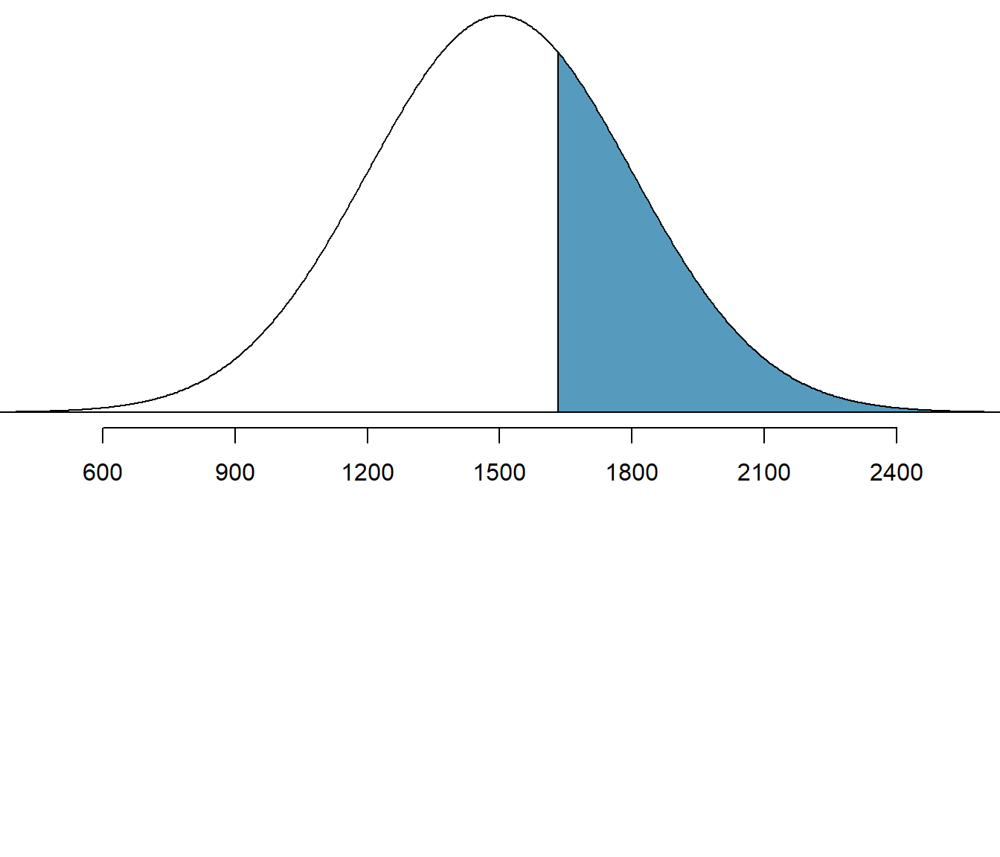
El procedimiento es más claro si grafican el área que van a calcular
Calculando probabilidades para la Distribución Normal
Probabilidades con Área Complementaria
Calculando probabilidades para la Distribución Normal
Usando las opciones de pnorm()

Calculando probabilidades: Otro ejemplo
Con base en una muestra de 100 transacciones, el gasto promedio mensual de los clientes en una tienda minorista estadounidense sigue una distribución casi normal con una media de $70.00 y una desviación estándar de $3.30. 쮺uál es la probabilidad de seleccionar aleatoriamente una transacción entre 69 y 74 dólares?
Calculando probabilidades: Otro ejemplo
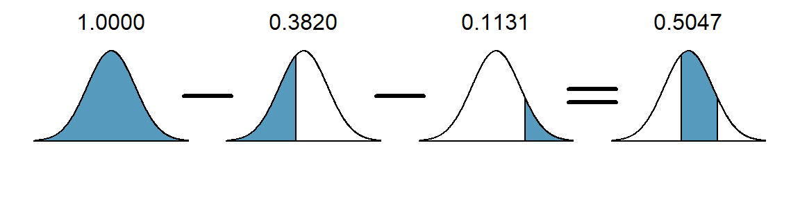Calculando cuartiles/percentiles
쯈ué valor en la distribución de transacciones es el primer cuartil (\(Q_1\))? Recuerden que 25% de los datos son menores al primer cuartil.
Calculando cuartiles/percentiles en R
La función qnorm() permite calcular cuartiles/percentiles para una distribución normal:
Sabiendo que el primer cuartil en la distribución normal estandarizada es \(Z_{Q_1}=-0.674\):
\[ -0.674 = Z_{Q_1} = \frac{x_{Q_1} - \mu}{\sigma} = \frac{x_{Q_1} - 70}{3.3} \] Resolviendo para \(Z_{Q_1}\), se encuentra que 67.7 dólares es el primer cuartil en la distribución original.
Calculando cuartiles/percentiles en R
Al usar las opciones de la función qnorm(), podemos calcular el valor exacto del primer cuartil:
쯈ué es un percentil?
Es un valor que divide un conjunto de datos ordenados en 100 partes iguales, indicando la posición relativa de un dato dentro del conjunto
Por ejemplo, el primer cuartil es equivalente al percentil 25, lo que significa que el 25% de los datos son menores o iguales a ese valor
La regla 68-95-99.7
💪 Ejercicio 4
Suponga que el límite de crédito
limit_bal\(\sim N(150000,50000)\). Calcule de dos maneras diferentes la probabilidad de que un cliente seleccionado al azar tenga un límite de crédito superior a 240000.Encuentren el límite de crédito que corresponde al percentil 95.